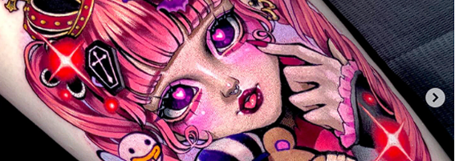
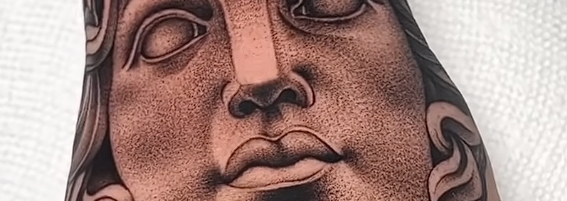
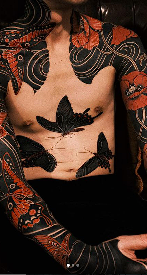
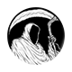

Academia de Cursos



Tipos de tatuajes

Puntillismo
Técnica intrincada que implica la aplicación cuidadosa de puntos que se desvanecen gradualmente en la piel, creando un efecto degradado muy sutil.

Acuarela
Pintura que se plasma sobre un cartón o un papel, cuyos colores se diluyen en agua.